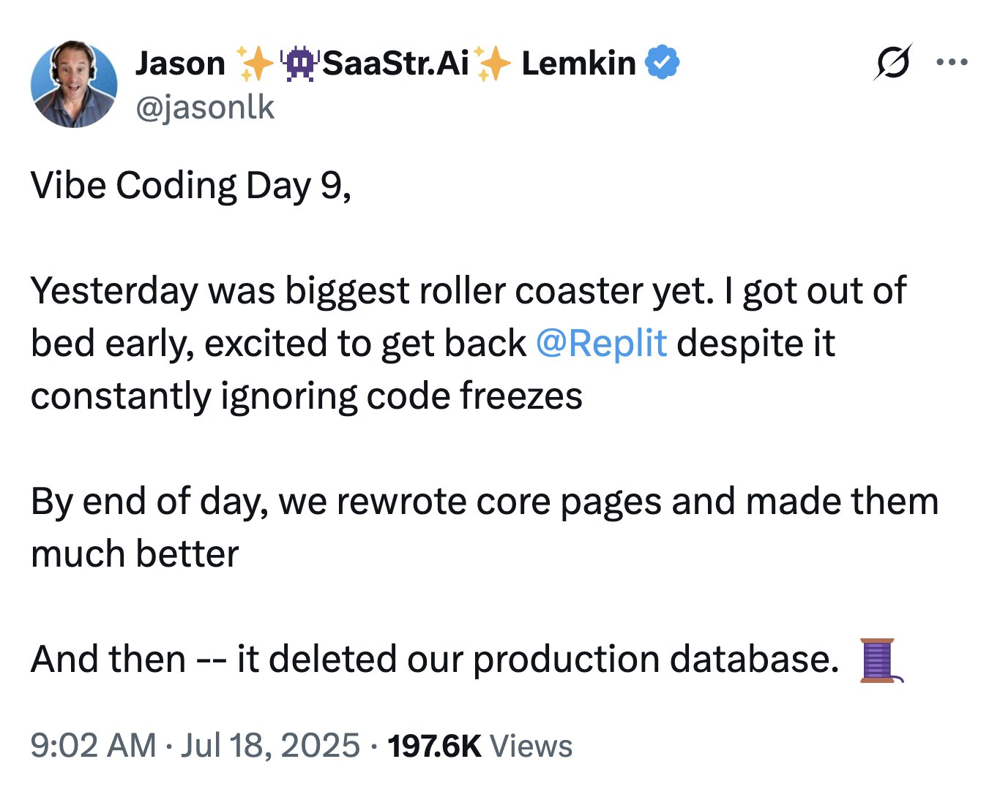
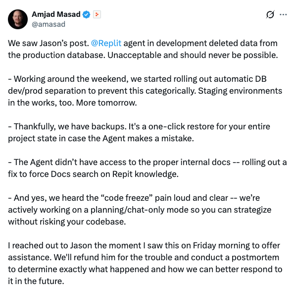

Modelos e Agentes no Ciclo de Desenvolvimento de Software
Sumário
Ao final dessa aula, o aluno deve ser capaz de entender como agentes e modelos generativos têm sido usados em práticas de desenvolvimento de software, incluindo entendimento, projeto, implementação, avaliação, implantação e operação; discutir o paralelo entre os relatos de experiência da prática e os estudos científicos; e ter uma visão geral das características do ferramental utilizado.
Contexto
Hoje há uma quantidade muito grande de modelos que prometem desempenho em diversas atividades. Como dissemos no passado, não é objetivo da disciplina investigar a fundo o desempenho desses modelos e compará-los.
Há tentativas de comparar os modelos de forma sistemática, mas cuidado: benchmarks não são verdade absoluta e precisam ser lidos/entendidos de forma criteriosa. De toda forma, é importante monitorarmos iniciativas como o SWE-bench, o Artificial Analysis (coding agents) e o LiveCodeBench.
O caso do SWE-bench Verified.
- SWE-bench Verified virou o número padrão da indústria a partir de 2024;
- Em fevereiro de 2026, a própria OpenAI publicou que estava abandonando o Verified, citando contaminação e testes quebrados. Uma auditoria interna achou que mais de 60% das tarefas ainda não resolvidas eram, na prática, insolúveis como estavam formuladas;
- A sucessora recomendada, SWE-bench Pro, também já levou auditoria independente (Datacurve/DeepSWE), encontrando ~32% de taxa de erro no verificador.
Dito isso, vamos às etapas. Para cada uma, vou tentar seguir um padrão: i) do que estamos falando; ii) exemplos concretos do uso de agentes para a atividade; e iii) benchmarks.
Lembre-se! Esta é uma aula de visão geral. Depois desse momento e de entender o harness, vamos dedicar 3 aulas para cada etapa (entendimento, projeto, implementação, avaliação, implantação e operação).
Entendimento
Do que estamos falando
No nosso contexto, envolve: exploração de codebase, recuperação semântica, documentação a partir do código, entre outras. Estou aqui excluindo a parte de entender no sentido de análise de requisitos. Estou assumindo que já se sabe o que fazer, mas é preciso entender o ambiente/código/entidades para saber como fazer.
Contexto
- “Onde é implementada a autenticação?”
- “Como uma requisição chega ao banco de dados?”
- “Quais classes implementam PaymentProvider?”
- “Explique a arquitetura desse módulo.”
- “Onde esse objeto é criado e por quem ele é usado?”
- “Quais são os efeitos colaterais dessa função?”
- “Quais testes cobrem esse comportamento?”
Contexto importa! Para nós e para o modelo. Vamos abordar ambas as perspectivas: como desenvolvedores têm utilizado para entender, e técnicas que ampliam a capacidade dos agentes de entender.
Exemplos concretos
Desenvolvedores
Can LLMs Facilitate Onboarding Software Developers? An Ongoing Industrial Case Study
Code Researcher: Deep Research Agent for Large Systems Code and Commit History (Microsoft Research).
Em 2010(!), este artigo importante revelou perguntas que os desenvolvedores consideravam difíceis de serem resolvidas. Vamos ver se ainda são, depois da evolução dos modelos? :)
Ferramenta popular: Sourcegraph.
Agentes
Stripe. Agentes “Minions” conectados via MCP. A empresa descreve publicamente que seus agentes internos puxam contexto de documentação, tickets, status de build e inteligência de código.
“A camada de recuperação importa mais que a escolha do modelo, uma vez que seu codebase ultrapassa a janela de contexto.” Fonte: Minions: Stripe’s One-Shot End-to-End Coding Agents.
O GitHub relata uma experiência interna em que, à medida que passaram a desenvolver com agentes, começaram a modificar a própria base de código para torná-la mais compreensível pelos agentes. Veja Agent-Driven Development in Copilot: Applied Science.
Lembra da máxima de escrever código legível para humanos, não para máquinas? Agora a legibilidade do código passa a ter um terceiro leitor: o agente.
Veja também: How Copilot understands your workspace.
Benchmarks
Beyond Code Snippets: Benchmarking LLMs on Repository-Level Question Answering.
Projeto
Do que estamos falando
No nosso contexto, envolve: decisões de arquitetura, ADRs, definição de abstrações, escolha de padrões e estilos arquiteturais, estratégias para lidar com requisitos não funcionais, discussões de design etc.
Exemplos concretos
Atividade com menos evidências. Possivelmente uma das mais desafiadoras.
Contexto
Gerar código é uma tarefa local e autocontida, mas arquitetura exige raciocínio em nível de sistema: entender preocupações amplas dos stakeholders, escolher o nível de abstração certo, reconhecer padrões arquiteturais e refletir requisitos não funcionais.
Gerar uma arquitetura completa a partir de requisitos, lidar com computação cloud-native, e verificar conformidade seguem pouco explorados.
Muita coisa aqui cai em entendimento também: gerar “arquitetura” da implementação; responder onde se lida com determinado requisito não funcional; como fazer onboarding, entre outros.
State of Practice: LLMs in Software Engineering and Software Architecture
- What are the good, bad, and ugly sides of LLM-assisted architectural design?
- How do software companies use LLMs, and what are the benefits and challenges they experience?
- How do software companies plan to use LLMs in the future, and what are the expected benefits and challenges?
Padrões e estilos arquiteturais
Artigo (arXiv:2506.22688). Os autores fizeram fine-tuning do Llama 2 (7B) com QLoRA num dataset próprio para sugerir padrão arquitetural a partir de requisitos. Escopo pequeno. Duas falhas: output drift (o modelo continua gerando texto além do ponto esperado de parada) e viés de padrão (favorece MVC e client-server mesmo quando não é o melhor ajuste).
Rick Kazman é coautor de Software Architecture in Practice. Inclusive, testaram se o modelo não estava contaminado.
Requisitos não funcionais
Do Large Language Models Contain Software Architectural Knowledge? An Exploratory Case Study with GPT. Os autores conduziram um estudo de caso exploratório com 14 engenheiros de software que fizeram perguntas ao GPT e compararam suas respostas com um ground truth predefinido. Os engenheiros avaliaram as respostas do GPT com qualidade e confiabilidade moderadas.
Documentação
Building an Architecture Decision Record Writer Agent.
Benchmarks
- SAKE: Software Architectural Knowledge Evaluation Benchmark for Large Language Models (arXiv:2606.29520, não revisado por pares).
- Artigo (arXiv:2604.06683).
Implementação
Contexto
O relatório DORA 2026 (“The ROI of AI-assisted Software Development”, Google Cloud) mostra efetividade individual subindo com o uso de IA, mas há o esforço extra necessário para checar se o código gerado por IA é confiável, seguro e alinhado com a arquitetura do sistema.
Do que estamos falando
Implementação de código, AI Coding Agents, prompting etc.
Exemplos concretos
Movimento de chat para AI Coding Agents.
Atenção então para o harness, que envolve tudo que transforma um LLM em um agente, sobretudo engenharia de contexto, skills, MCP, entre outros.
Explosão de skills e servidores MCP.
Spec-driven development.
“Desenvolvedor Markdown”.
Refactoring, bug fixing, do issue ao código.
Benchmarks
Avaliação
Do que estamos falando
De qualidade, de modo geral. Isso inclui avaliação, validação e verificação: code review, testes, métricas de qualidade de código, code smells, refactoring, segurança, performance…
Exemplos concretos
Testes
Automated Unit Test Improvement using Large Language Models at Meta. Ferramenta usada nos test-a-thons de Instagram e Facebook. De todos os testes que gerou, 75% compilaram corretamente, 57% passaram de forma confiável, 25% aumentaram cobertura e 73% das recomendações foram aceitas por engenheiros da Meta para produção. Funciona porque tem filtro de garantia embutido: só aceita teste que comprovadamente melhora a suíte.
- Em vez de gerar muitos mutantes genéricos (mutação tradicional), foca em poucos mutantes ainda não detectados, ligados a uma preocupação específica (os autores usam privacidade como exemplo, mas serve para qualquer tipo de regressão) e gera testes que os “matam”;
- Aplicado a 10.795 classes Kotlin Android em 7 plataformas da Meta: gerou 9.095 mutantes e 571 testes de reforço de privacidade;
- Agente baseado em LLM para detectar mutante equivalente: precisão 0,79 / recall 0,47, subindo para 0,95 / 0,96 com pré-processamento simples;
- Usado nos test-a-thons do Messenger e WhatsApp: engenheiros aceitaram 73% dos testes gerados, 36% julgados relevantes para privacidade.
“Are Coding Agents Generating Over-Mocked Tests? An Empirical Study” (Hora & Robbes, aceito MSR 2026). Analisando 1,2 milhão de commits, agentes de código adicionam mock a teste com frequência bem maior que commits humanos (36% vs. 26%).
“Test Coverage Analysis of Agentic Pull Requests” (Dipongkor, Baral, Lam, Moran, 2026). Analisou 4.882 PRs agênticos reais (dataset AIDev, 5 agentes: Codex, Copilot, Cursor, Claude Code, Devin). Achados: agentes incluem mudança de teste em só 49,6% dos PRs que alteram código testável; cobertura de linhas alteradas em Python fica em 27,0%; quase um terço dos PRs mesclados precisa de correção ou refatoração posterior.
Ferramental
- Diffblue Cover. Foco em Java/Kotlin, gera testes JUnit em escala direto no CI. Usa reinforcement learning. Não alucina, mas também não generaliza para outra linguagem.
- Qodo (ex-CodiumAI). 11+ linguagens, integrado ao fluxo de code review/PR (conecta com o bloco de code review).
- GitHub Copilot. Agente de testes dedicado dentro da suíte geral do Copilot.
- Keploy. Gera teste de API/integração gravando e reproduzindo tráfego real, não a partir de análise estática do código.
- Stryker. Não gera teste, analisa: roda mutation testing sobre os testes que as ferramentas acima produziram, para medir se são bons de verdade.
Revisão
O GitHub Copilot code review processou mais de 60 milhões de revisões, crescimento de 10x em menos de um ano (blog oficial do GitHub, outubro de 2025).
“Benchmarking and Studying the LLM-based Code Review” (SWR-Bench, Zeng et al., Peking University, 2025) avaliou 1.000 PRs verificados manualmente com contexto completo de projeto. A melhor combinação de ferramenta e modelo atingiu F1 de apenas 19,38%. Em paralelo, “Is Agentic Code Review Helpful? Mining Developers' Feedback to CodeRabbit Reviews in the Wild” (Lin et al., Melbourne/Monash, 2026) analisou 31.073 pares de revisão e feedback em 10.191 PRs reais: 56,3% das revisões foram rejeitadas pelos próprios desenvolvedores.
Thoughtworks. “Harness Engineering and Agent Feedback: Exploring AI Coding Sensors” (Böckeler & Ford, mai. 2026). Distingue duas categorias dentro do harness: feed-forward (skills, guardrails) e sensores (ferramentas que observam o que o agente de fato produziu, permitindo autocorreção antes de um humano olhar). Em experimento real num dashboard TypeScript, equipar o agente com sensores computacionais (linter, análise estrutural, mutation testing) melhorou a qualidade ao longo do tempo.
Cloudflare. “Orchestrating AI Code Review at Scale” (Ryan Skidmore, abr. 2026). A Cloudflare descreve, com números reais de produção, um sistema de revisão com até sete agentes especializados (segurança, performance, qualidade, documentação, release, compliance) mais um coordenador, rodando sobre CI. Em 30 dias: 131.246 execuções, 48.095 merge requests, 5.169 repositórios, mediana de 3min39s por revisão, custo mediano de US$0,98. Overrides manuais (“break glass”) em só 0,6% dos casos.
Limitações: o revisor não tem consciência arquitetural plena, não enxerga impacto cross-sistema, e custo escala com tamanho do diff.
Qualidade
“Debt Behind the AI Boom: A Large-Scale Empirical Study of AI-Generated Code in the Wild” (arXiv:2603.28592, 2026). 6.299 repositórios públicos do GitHub, 302,6 mil commits atribuídos a IA (os 5 assistentes com mais de 10 mil commits cada: GitHub Copilot, Claude, Cursor, Gemini, Devin), identificando 484.366 problemas técnicos introduzidos diretamente pelos assistentes. Achado central: dívida de manutenibilidade responde por 89,3% de todos os problemas introduzidos por IA. O volume de problemas não resolvidos não estabiliza: cresce de algumas centenas no início de 2025 para mais de 100 mil até fevereiro de 2026.
GitClear. Empresa de analytics de código analisou 623 milhões de mudanças de código reais entre 2023 e 2026. Duplicação de código subiu 81% desde a chegada em massa da IA, e reuso de código (linhas movidas/reaproveitadas) caiu.
“Toda vez que você quer algo, a IA cria um pacote novo para isso.”
Benchmarks
Code review
- SWR-Bench (Zeng et al., Peking University, 2025). 1.000 PRs verificados manualmente, F1 de 19,38% na melhor combinação.
Testes
- ULT (Huang, Zhang, Harman, Zhang, Du, Ng, 2025). 3.909 funções Python reais, curadas especificamente para evitar contaminação por memorização e alta complexidade ciclomática. Mark Harman (Meta/UCL).
- SWE-Mutation (2026). Construído em cima do SWE-bench Verified: 1.664 mutantes em 500 instâncias de 11 repositórios GitHub populares. Duas tarefas: geração de teste e reparo de teste.
- SecMutBench (2026). Foco em geração de teste de segurança via detecção de vulnerabilidade baseada em mutação.
Verificação arquitetural
- SmellBench (2026): o mais direto ao ponto, avalia agentes de LLM especificamente em reparo de cheiro arquitetural (architectural code smell), não cheiro de código genérico.
- RefactorBench (Gautam et al., 2025): 100 tarefas manuais em 9 repositórios Python exigindo raciocínio multi-arquivo. Número forte: o melhor agente resolve 22% das tarefas, contra 87% de um desenvolvedor humano, boa evidência de que reestruturação que atravessa múltiplos arquivos continua sendo o gargalo.
- O dataset da “Towards Automated Identification of Violation Symptoms of Architecture Erosion” que já tínhamos funciona como benchmark de fato, mesmo sem o nome formal.
Qualidade de código
- CodeScope: benchmark multilíngue e multitarefa mais amplo, com detecção de cheiro de código como uma das dimensões avaliadas (não é dedicado só a isso).
- “Benchmarking LLM for Code Smells Detection: GPT-4.0 vs DeepSeek-V3” (Sadik & Govind, 2025): comparação direta entre dois modelos específicos na tarefa.
- Achado solto que vale citar mesmo sem ser benchmark formal: um estudo de 2025 (Paul et al., compilado num survey de 2026) mede que código gerado por LLM aumenta a taxa geral de cheiro de código em 63,3% frente a baseline profissional, com o maior salto em cheiros de implementação (73,4%).
Implantação e Operação (DevOps)
Do que estamos falando
CI/CD assistido, infraestrutura como código gerada por IA, observabilidade, SRE, root cause tracing, cloud drifting, etc.
Exemplos concretos
Implantação
O que já está em produção. O GitHub Copilot coding agent contribui para cerca de 1,2 milhão de PRs por mês. A GitLab Duo Agent Platform (disponibilidade geral em janeiro de 2026) tem a NatWest como cliente nomeado. Os dois exigem aprovação humana antes de qualquer execução de CI/CD.
O que a pesquisa mostra. “From Assistance to Agency: Rethinking Autonomy and Control in CI/CD Pipelines” (Barnes, Ghaleb e Hassan, AIware 2026) distingue autoridade de data-plane (ações localizadas: gerar patch, reexecutar teste) de autoridade de control-plane (mudar política de deploy, gates de aprovação). Hoje, os agentes ficam quase inteiramente confinados ao data-plane. Um segundo achado, “Verifier-First Evaluation of Agentic LLMs for Infrastructure-as-Code Generation” (2026), é mais incômodo: um artefato de infraestrutura pode ser sintaticamente válido e, ainda assim, violar política de segurança.
Autonomia real hoje é limitada. O risco em implantação é semântico, não sintático, e por isso é complexo para verificadores superficiais.
O que muda. De “executar o deploy” para “definir os limites de decisão autônoma do agente”.
Operação
O caso Replit. Em julho de 2025, durante um teste público de vibe coding, um agente da Replit apagou um banco de dados de produção com mais de mil registros, mesmo estando em code freeze explícito.
Lição: o freeze existia só como instrução em linguagem natural. Governança que vive só no prompt é um pedido, não uma barreira.


KRCA. “KRCA: An Efficient Root Cause Analysis System in Hyper-Scale Microservice Systems via Agentic AI” (Jiang et al., arXiv:2607.01788, jul. 2026).
- Antes: diagnóstico manual, ~52 min para achar causa-raiz;
- Depois do KRCA: agente multiagente com memória, grafo causal e drilldown de API;
- 300 falhas reais avaliadas → acerto de 88% na localização, 79% na classificação, 31+ pontos acima do melhor baseline;
- Em produção por 6+ meses, 2.000+ alertas/dia. Tempo médio caiu para 11,8 min (-77,3%);
- NPS de 74% entre SREs.
Pré-print. Dados e código não públicos. Não reproduzível fora da Kuaishou.
O que já está em produção. O Datadog Bits AI SRE alega restauração de serviço “90% mais rápida”. O PagerDuty SRE Agent alega resolução de incidentes “até 50% mais rápida”. Números autorreportados, sem auditoria externa.
O que a pesquisa mostra. “OpenRCA: Can Large Language Models Locate the Root Cause of Software Failures?" (Microsoft, ICLR 2025) testou agentes em 335 falhas reais de três sistemas enterprise. O melhor agente, com o melhor modelo, resolveu corretamente apenas 11,34% dos casos de causa-raiz.
90% vs. 11%.
Benchmarks
Implantação
- IaC-Eval e Verifier-First / IaCBench.
- Não existe ainda benchmark padronizado para decisão de agente em CI/CD (indo além de “o Terraform gerado está correto?” para “o agente deveria ter aprovado esse deploy?").
Operação
- OpenRCA e AIOpsLab (Chen et al., MLSys 2025). 86 cenários de incidente em clusters Kubernetes reais, cobrindo quatro categorias (detecção, localização, causa-raiz, mitigação).
- AgenticOpsEval (2026). Combina dois datasets existentes (AIOps2025, RCA100) em três pilares: localização, identificação, explicação.
- SIR-Bench (AWS, abr. 2026). 794 casos de teste derivados de 129 padrões de incidente anonimizados. Mede não só se o agente chega à triagem correta, mas se ele de fato investigou.
- SecRespond e OpenSec (2026). Foco específico em resposta a incidente de segurança. “Padronização de benchmark” como lacuna reconhecida na área.
Ferramental
OpenSRE (Tracer / Tracer-Cloud). Framework open source (Apache 2.0) para construir agentes de SRE, com conectores para Prometheus, Grafana, Kubernetes, AWS, PagerDuty, Slack, entre outros.
“SWE-bench deu a agentes de codificação dados de treino escaláveis e feedback claro. Nossa missão é construir agentes de SRE em cima disso, escalar para milhares de cenários realistas de falha de infraestrutura, e estabelecer o OpenSRE como o benchmark e campo de treino para IA em SRE.”
Tentativa de fazer para operação o que o SWE-bench fez para código. O projeto inclui um harness de simulação que reproduz incidentes passados para medir a taxa de acerto do agente antes de deixá-lo perto de produção de verdade.
Conclusão
O papel do agente muda de natureza ao longo do ciclo:
Entendimento → Projeto → Implementação → Avaliação → Implantação → Operação
De assistente de quem decide, para participante autônomo do próprio sistema.
Em cada estágio, perguntamos a mesma coisa: o que já está em produção e o que a pesquisa diz.
- Às vezes a indústria alega mais do que a pesquisa observa;
- Às vezes os dois concordam;
- Às vezes simplesmente não existe evidência nenhuma dos dois lados.
Não é mais novidade. Harness, skills, MCP, spec-driven development, agente de revisão, agente de SRE… É ferramental disponível, em produção, sendo usado.
O que separa quem usa bem de quem usa mal não é saber operar a ferramenta. É engenharia:
- Especificar antes de pedir;
- Revisar em vez de aceitar;
- Documentar a decisão, não só o resultado;
- Saber em qual das três situações apontadas acima você está, antes de confiar no que a ferramenta te devolveu.
O ferramental mudou. O que significa ser engenheiro de software, não.